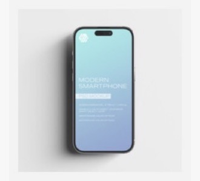
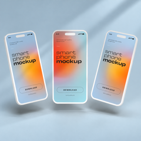
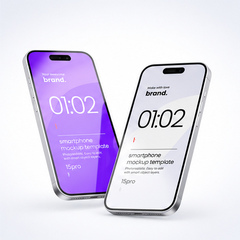
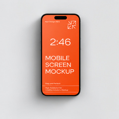
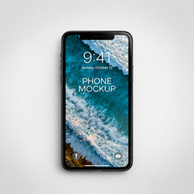
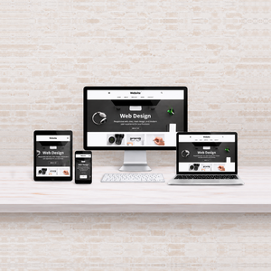

Graphic Design
ブランドの想いや個性を、記憶に残るかたちに。ロゴや印刷物など、一貫した世界観を持つビジュアルをデザインします。
INDEPENDENT DESIGNER / TOKYO
想いを伝わるデザインに。
グラフィックとWebでブランドの可能性をひらく。
サービス
ブランドの想いや個性を、記憶に残るかたちに。ロゴや印刷物など、一貫した世界観を持つビジュアルをデザインします。
使いやすさと、そのブランドらしさを大切に。情報設計からUIまで、伝わる・使いたくなるWebサイトをつくります。
課題の整理から、アイデアをかたちにするまで。目的を共有し、デザインとコミュニケーションでプロジェクトを導きます。
制作実績

Figmaでデザインを設計し、AIを活用して、HTML/CSSで実装した個人サイトです。





A selection of design explorations
私について
DESIGNER / TOKYO, JAPAN
企業やサービスの課題をデザインの力で解決するWebデザイナーです。UI/UXを重視し、ユーザーの行動心理を踏まえた情報設計と、目的達成につながるビジュアル表現を得意としています。企画段階から関わり、デザインだけでなく、実装・改善までを一貫して対応。デザインの見た目だけでなく、成果を生む体験を設計することを大切にしています。